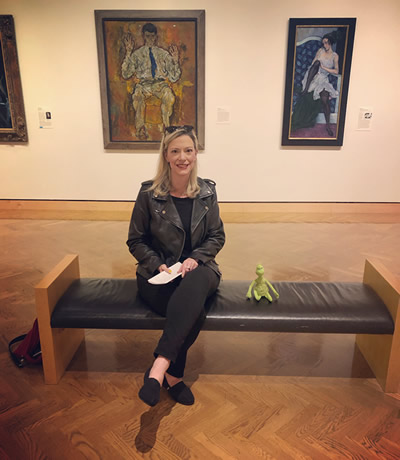

I'm glad you stopped by! This is the first page that I worked on using Visual Studio Code and published to GitHub. I'm really excited about this class. I've always wanted to learn how to use VS Code and GitHub. I was a bit apprehensive about using these tools but after some excellent instruction and watching the awesome videos, I'm on my way!
Don't Ever Be Ashamed of Loving the Strange Things That Make Your Weird Little Heart Happy.
♥ Elizabeth Gilbert